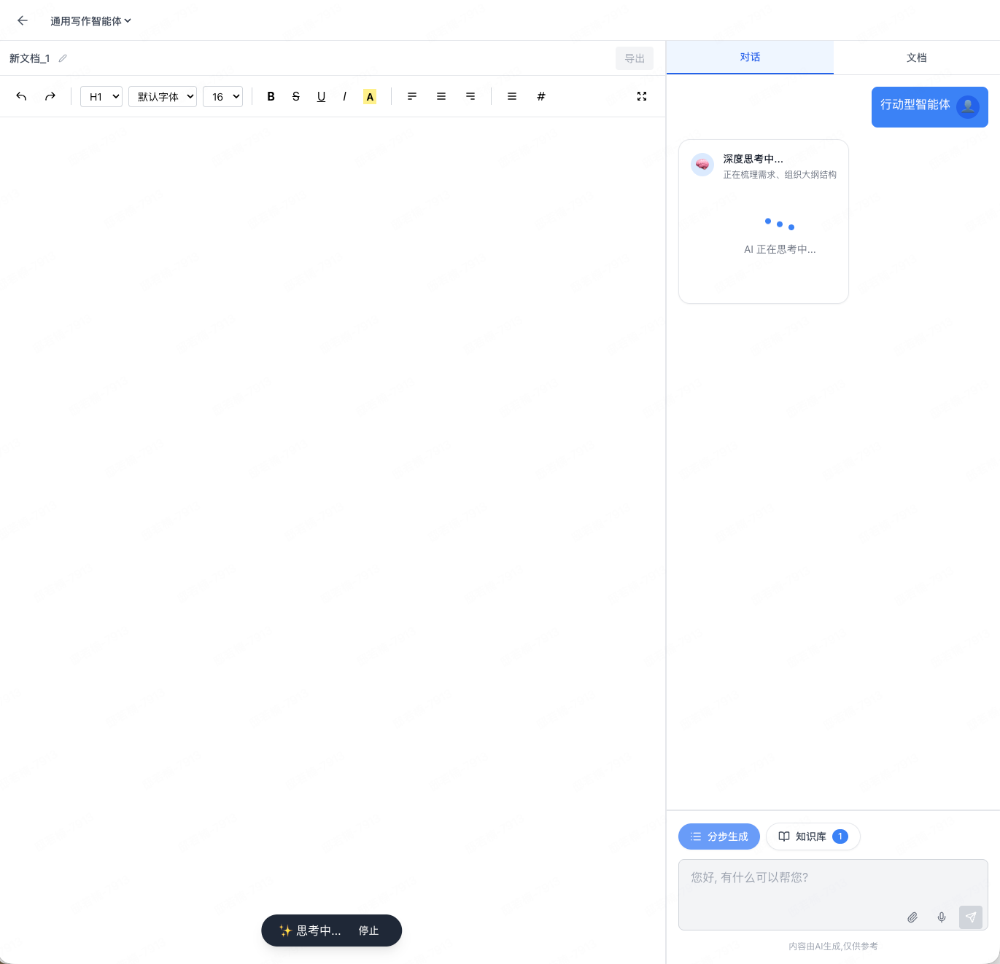
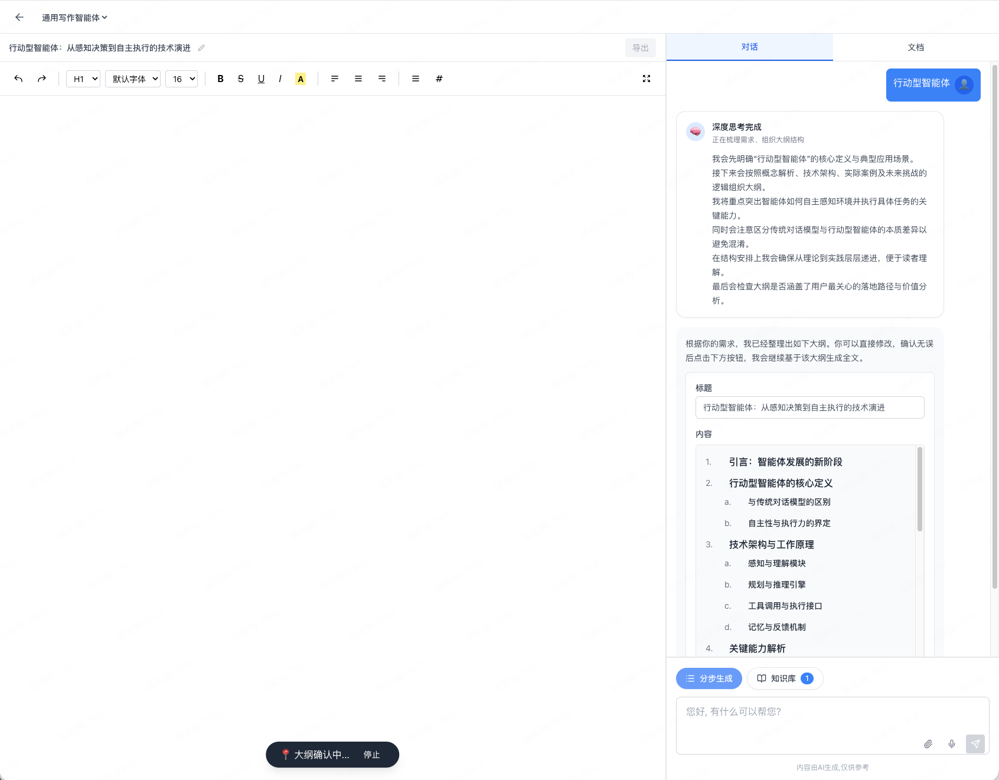
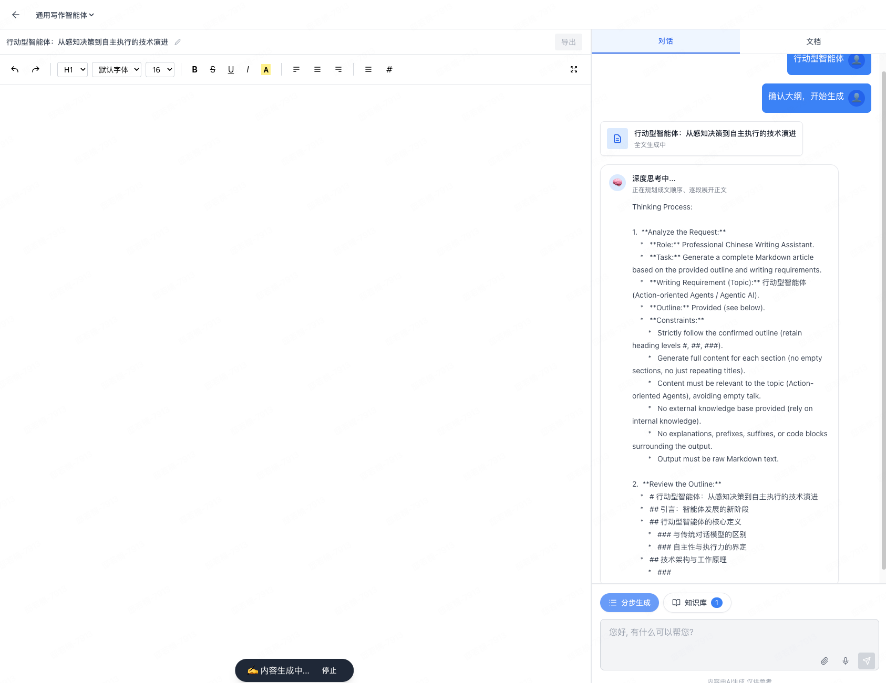
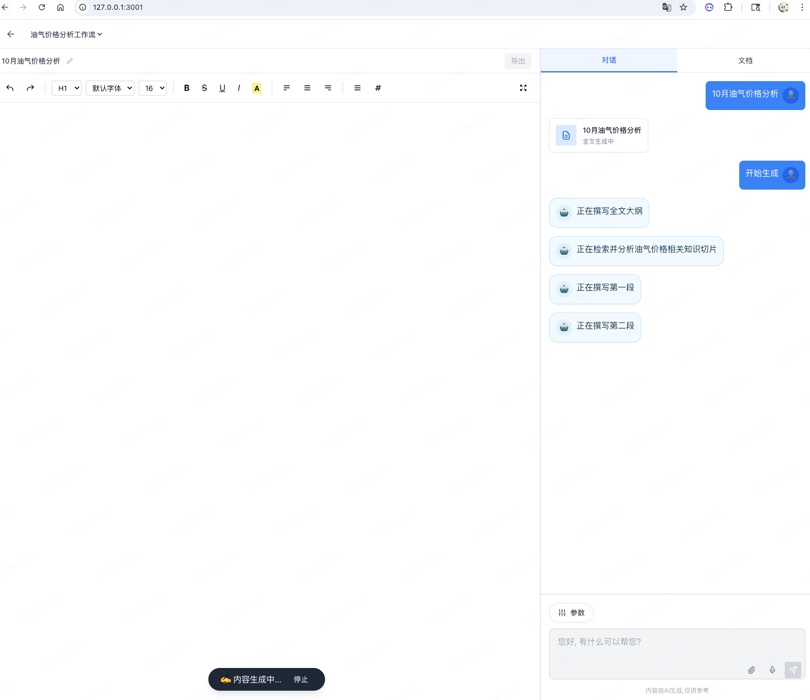
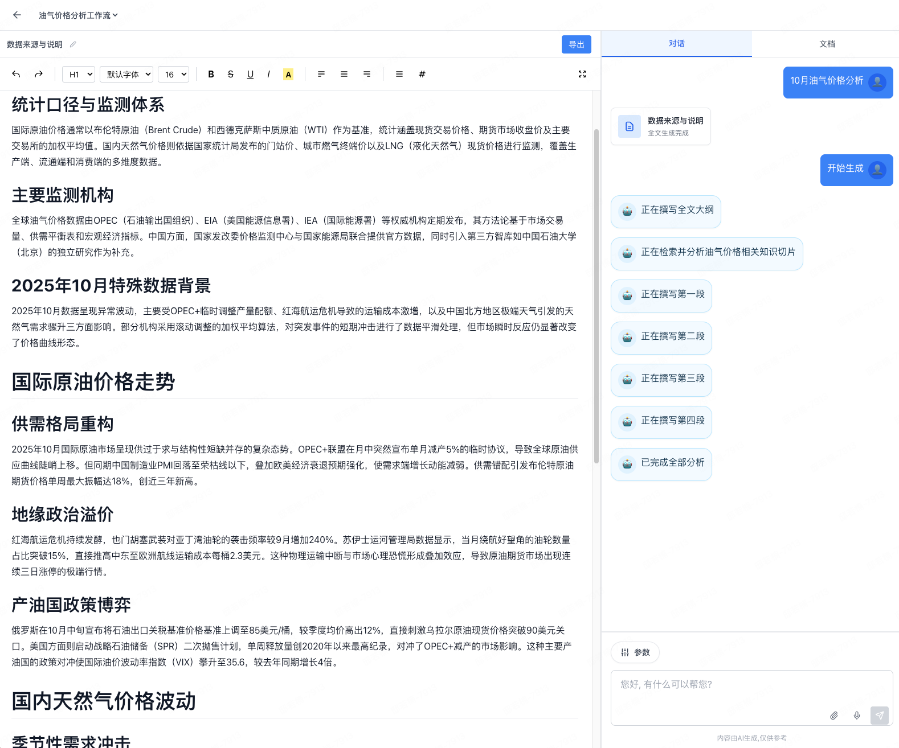
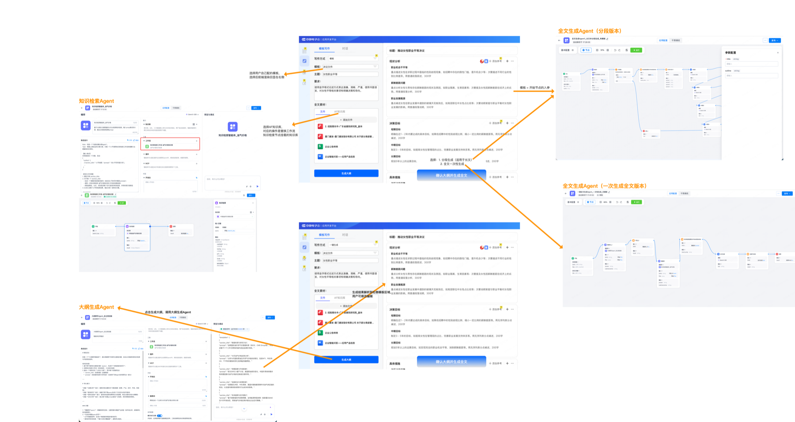

01
起稿成本高
面对复杂主题，用户先要自己梳理结构，再反复补全内容，长文起步最耗时。
面向政企与专业写作场景的智能写作产品，把通用写作智能体、 指定写作智能体与Deep Research 融合进同一工作台，覆盖从研究、起稿、生成到改写的完整链路。
深度研究、动态大纲、分步生成，适合开放式专业写作。
围绕问题拆解、检索、校验与结构化输出形成闭环。
基于 AF 平台低代码构建，逻辑、参数、记忆都可自定义。
真正影响效率的不是单次生成速度，而是资料收集、结构规划、规范落地与过程可控四个关键环节长期割裂。
面对复杂主题，用户先要自己梳理结构，再反复补全内容，长文起步最耗时。
知识库、附件、历史对话和外部材料分散存在，检索结果往往停留在浅层召回。
行业模板、组织风格、专业术语和排版标准缺乏统一承接，成果一致性难保障。
通用 AI 难以承接差异化业务逻辑，组织专属经验无法真正沉淀为可复用能力。
从需求进入、知识研究、智能体执行到结果落盘，新星 Writing Studio 在一个工作台里统一承接完整写作链路。
适合报告、分析、专栏、综合材料等对结构与深度要求高的文本任务。
让组织内部独特的审批规范、参数规则、知识沉淀变成一键可用的写作能力。
把 AI 从一次性输出，升级为可持续协作的写作搭档。
新星 Writing Studio 不是让一个模式硬撑所有任务，而是把“先研究再写”和“按规则直接执行”放进同一工作台，让不同写作诉求都能找到最合适的路径。
双模式的价值不在于提供两个入口，而在于让探索能力与专属流程能力在同一个写作闭环里自然衔接。
通用写作模式把理解任务、生成大纲、深度思考和全文输出串成一个连续过程，用户既能看到过程，也能随时接管内容。



当需求模糊、材料分散、结构尚未成形时，通用写作模式会先组织研究路径，再进入写作过程。
关键阶段被完整透明化，复杂度高的写作不再是“难以下笔”，而是可以沿着研究路径持续推进。
指定AF智能体模式更适合标准化、高频次、强约束任务。用户不必重复描述流程，直接调用沉淀好的专属智能体即可完成执行。


例如工作流报告、行业模板文档、组织内部标准材料等，不再依赖每次重新描述规则。
每一步状态都直接可见，执行完成后结果自然回到工作台，让专属方法论真正沉淀为稳定生产效率。
真实产品的知识引擎不是“一次提问、一次召回”的线性检索，而是以 Deep Research 为核心的多轮递进研究机制。
补全省略信息、明确指代对象、对齐专业词汇，确保检索意图准确无偏差。
围绕核心问题拆解研究要点，连续发起检索，不止停留在单次召回结果。
对召回信息去重、交叉校验、优先级排序，提炼观点、依据与关键数据。
依托 AF 低代码智能体开发平台，组织可以按自己的规则编排专属写作智能体，让写作逻辑、参数、记忆与输出方式全部可掌控。
通过可视化方式构建专属智能体，无需为每个写作流程单独开发前端逻辑。
既支持自主规划智能体，也支持工作流智能体，适配开放探索与标准执行。
参数、记忆与输入变量映射到写作端，用户在工作台中即可直接使用。
编排完成后一键发布到写作工作台，形成“编排 - 发布 - 调用”闭环。

用户可在平台上设计知识检索、大纲生成、全文生成等流程节点，并发布到写作工作台直接调用。
一个入口完成问题输入、知识库挂载、智能体选择、任务切换与快速开始。
首页承接通用写作与指定智能体两种路径，后续所有任务、知识源与内容生成过程都在同一空间内沉淀。
用户可选择当前任务使用的外挂知识源，让写作过程直接参考组织知识资产。
输入同一类需求时，可按复杂度和控制要求切换到通用模式或指定智能体模式。
会话与任务可持续保留，便于收藏、恢复、重命名和围绕长期主题持续迭代。
生成只是开始。系统通过文内划选改写、Copilot 侧边协作和待确认修改机制，把“用户定需求、AI 做配合”真正落到写作流程里。
通用写作智能体或指定写作智能体先完成结构规划、生成正文与补充材料。
支持富文本编辑、文内划选改写、快捷指令改写和右侧 Copilot 批量协作。
修改建议以待确认方式插入，用户决定是否接受，确保最终内容始终由人把关。
针对词句、段落做局部优化，无需重新生成整篇内容。
通过对话完成定位、追问、补充与批量修改，适配更复杂的编辑诉求。
工具栏、表格、图片、排版能力完整，生成内容可直接进入正式成稿流程。
保留任务上下文与修改路径，减少误替换和无效重写带来的二次成本。
产品能力围绕组织协作、知识沉淀、任务管理和权限治理展开，目标是让写作成为可持续复用的生产系统。
产品能力既适合需要深度研究支撑的开放型写作，也适合依赖标准流程和组织规则的高频规范写作。
围绕政策、规范与组织表达习惯，提高起草效率与表达一致性。
借助 Deep Research 完成趋势研判、数据论证与结构化成稿。
让组织既能批量产出标准文本，也能保留团队特有的表达模板。
通过工作流智能体执行标准流程，降低重复劳动与格式风险。
适合需要多轮研究、资料拼接和逻辑推导的高复杂度写作任务。
把专业规范、知识依据与标准输出方式沉淀为组织可复用能力。
新星 Writing Studio 的核心不只是“会写”，而是把研究能力、专属流程、组织经验与人机协同 组合成可持续复用的智能写作生产力。